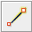
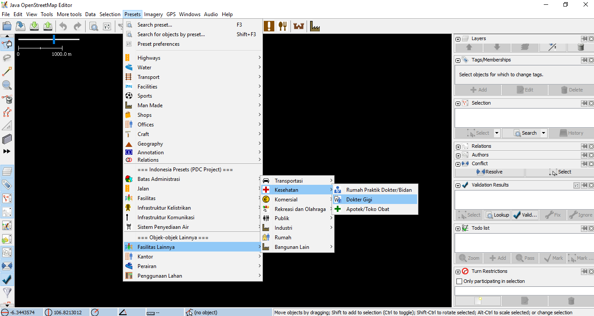
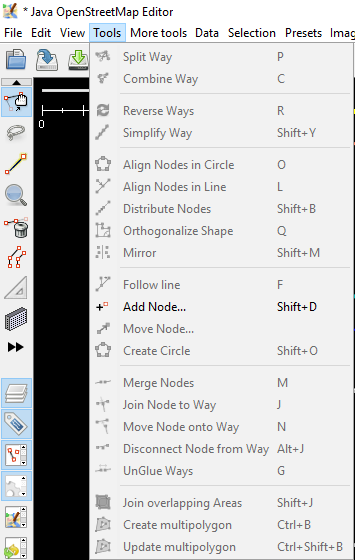
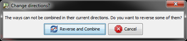
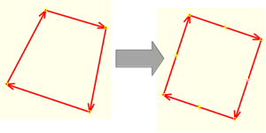
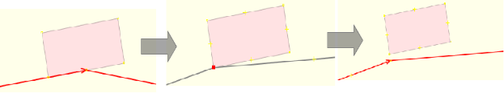
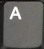
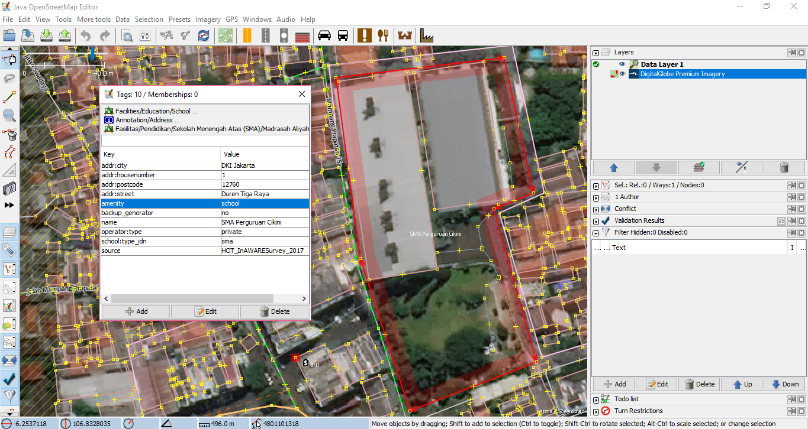
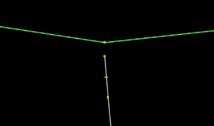
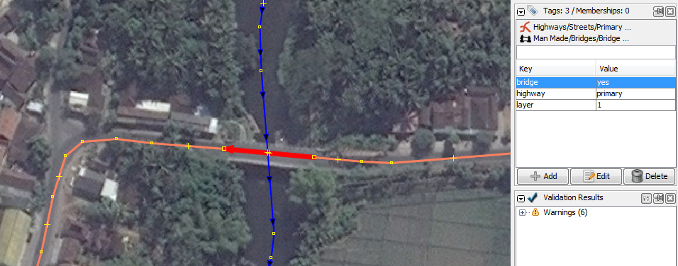

Menggunakan Java OpenStreetMap (JOSM)
Download page as PDFTujuan Pembelajaran:
- Memahami cara menggunakan alat dasar di JOSM
- Mampu mengoperasikan penggambaran tingkat lanjut di JOSM
- Memahami tips editing di JOSM
- Memahami cara menggambar objek khusus seperti jembatan, kompleks sekolah, dan jaringan jalan.
Java OpenStreetMap atau biasa yang disebut dengan JOSM adalah perangkat editor OpenStreetMap berbasis desktop. JOSM memungkinkan Anda melakukan proses edit data pemetaan secara offline untuk sementara waktu atau tidak harus selalu terkoneksi dengan internet. Jika pada modul sebelumnya Anda mempelajari pengoperasian JOSM, maka pada modul ini Anda akan mempelajari cara menggunakan JOSM.
I. Latihan Menggambar Dasar dengan JOSM
Silahkan Anda buka file contoh OSM yang akan digunakan untuk mempelajari cara dasar menggambar peta dengan JOSM. Perhatikan bahwa data ini hanya sebuah contoh dengan tempat yang tidak nyata, jadi Anda tidak akan menyimpan dan mengupload data tersebut ke dalam OpenStreetMap.
- Download file latihan tersebut disini: www.bit.ly/osmsampel
- Buka file contoh peta OSM di dalam JOSM. Klik tombol Open a File di bagian atas sebelah kiri.

Ikon Open a file
- Cari dan pilih file sample.osm di komputer Anda yang sebelumnya Anda download, kemudian klik Open. Di komputer Anda akan muncul tampilan seperti berikut ini:
Tampilan file latihan di JOSM
a. Operasi Dasar
Untuk menggeser peta ke kanan atau ke kiri dan ke atas atau ke bawah, Anda dapat melakukannya dengan cara klik kanan mouse Anda, kemudian tahan dan gerakkan mouse Anda sesuai dengan arah yang Anda inginkan. Terdapat dua cara untuk memperbesar dan memperkecil tampilan peta. Cara yang pertama adalah menggunakan roda gulir atau scroll yang ada pada mouse Anda. Scroll ke depan untuk memperbesar peta dan scroll ke belakang untuk memperkecil peta. Cara yang kedua adalah menggunakan skala baris di sebelah kiri di jendela peta Anda. Klik dan tahan kemudian geser ke kanan atau ke kiri dengan mouse Anda.
Skala baris di JOSM
b. Titik, Garis, dan Area
Pada OpenStreetMap terdapat tiga jenis objek yang digunakan. Ketiga jenis objek itu adalah titik, garis, dan poligon.
- Titik adalah suatu lokasi yang digambarkan dengan simbol. Dalam data contoh ini terdapat dua titik, yaitu toko sepatu dan supermarket. Toko sepatu digambarkan dengan simbol sepatu dan supermarket digambarkan dengan simbol keranjang belanja. Jika Anda belum dapat melihatnya dengan jelas, silahkan perbesar tampilan peta Anda.
- Terdapat beberapa garis yang terdapat dalam peta, objek yang digambarkan dalam bentuk garis seperti jalan, sungai, dan tanggul sungai. Jika Anda melihat dengan lebih teliti, maka Anda akan melihat di dalam garis akan terdapat titik-titik. Titik-titik tersebut tidak memiliki simbol atau informasi apapun, tetapi titik-titik tersebut yang membentuk garis.
- Terakhir, ada beberapa poligon dalam peta contoh ini yang menunjukkan tempat-tempat yang berbeda seperti hutan, sungai, dan bangunan. Suatu poligon secara umum mewakilkan suatu area seperti lapangan ataupun bangunan. Poligon sama seperti garis, akan tetapi perbedaannya adalah poligon terdiri atas beberapa garis yang membentuk dimana titik akhir bertemu dengan titik awal garis tersebut.
c. Memilih Objek
Untuk mengedit suatu objek, Anda perlu untuk memilih objeknya terlebih dahulu. Berikut ini adalah cara untuk memilih objek:
- Klik tool select, move, scale, and rotate object untuk memilih objek.

Ikon tool select, move, scale, and rotate object
- Kemudian klik pada objek yang ingin Anda pilih.
Ketika Anda memilih sebuah objek, objek tersebut akan berwarna merah dan muncul beberapa daftar di panel Tags pada sebelah kanan layar JOSM Anda. Tags adalah bagian dari suatu titik, garis, atau poligon yang memberitahukan informasi mengenai objek tersebut. Saat ini yang Anda butuhkan adalah mengetahui informasi ini untuk menjelaskan apakah objek yang ada di peta itu hutan, sungai, bangunan, atau bentuk lain.
Informasi objek di panel Tags JOSM
d. Cara Mengubah Objek
Anda dapat mengubah objek yang sudah digambar di JOSM. Berikut ini adalah langkah-langkah untuk mengubah objek:
- Pilih salah satu objek pada contoh, misalnya objek hutan. Pastikan Anda mengklik garis pada hutan tersebut, bukan klik pada titiknya. Selanjutnya klik dan tahan objek tersebut kemudian geser. Anda baru saja memindahkan hutan ke lokasi yang baru pada peta.
- Klik salah satu titik pada garis hutan. Klik dan tahan titik tersebut kemudian geser titiknya. Anda dapat menggerakan titik. Dengan menggerakkan titik ini Anda dapat mengubah bentuk dari sebuah objek.
Contoh mengubah objek
e. Menggambar Objek
Di sebelah kiri pada layar JOSM terdapat banyak toolbar yang menyediakan lebih banyak informasi mengenai peta. Tools ini dapat mengubah perintah apa yang Anda lakukan dengan mouse Anda, salah satunya adalah untuk menggambar objek. Berikut ini adalah langkah-langkah untuk menggambar objek:
- Sebelum menggambar objek, Anda perlu memastikan bahwa tidak ada objek yang terpilih. Klik diluar objek peta dimana tidak terdapat objek, untuk memastikan tidak ada objek yang terpilih.
- Kemudian klik pada tombol Draw Tool untuk menggambar objek.

Ikon Draw Tool
- Temukan area kosong pada peta, dan klik dua kali dengan mouse Anda kemudian akan tergambar sebuah titik tunggal.
Contoh menggambar objek titik
- Untuk menggambar sebuah garis, klik sekali dengan mouse Anda. Gerakan mouse Anda dan klik kembali. Lanjutkan hingga membentuk sebuah garis. Untuk mengakhiri garis, klik dua kali pada mouse Anda.
Contoh menggambar objek garis
- Gambarlah sebuah poligon dengan cara yang sama seperti menggambar garis, tetapi untuk mengakhiri poligon dengan klik dua kali di atas titik yang pertama kali Anda buat.
Contoh menggambar objek poligon
f. Cara Menambahkan Presets
Sekarang Anda telah memahami bagaimana cara untuk menggambar titik, garis, dan poligon. Akan tetapi Anda masih belum memberikan informasi mengenai objek tersebut. Di OpenStreetMap memberikan informasi mengenai objek yang Anda gambar adalah suatu kewajiban, apakah objek tersebut adalah sekolah, rumah sakit, kantor pemerintahan dan apakah objek yang Anda buat itu bangunan atau sesuatu yang lain. Hal ini diwajibkan agar orang lain dapat mengetahui informasi objek tersebut. Untuk memberikan informasi terhadap objek yang Anda buat atau edit, Anda perlu memasukkan presets di objek tersebut. Berikut ini adalah langkah-langkahnya:
- Klik tombol Select pada toolbar sebelah kiri di JOSM.
- Pilih objek yang ingin ditambahkan preset.
- Pilih menu Presets pada bagian atas JOSM. Gerakkan mouse Anda ke sub-menu jenis objek yang ingin Anda tentukan.

Memasukkan preset
- Jika Anda kesulitan mencari pada sub-menu, Anda dapat klik di bagian Search preset atau dengan menekan tombol F3 pada keyboard Anda.
- Kemudian akan muncul jendela search preset. Anda dapat langsung mengetik jenis objeknya, misalnya dokter gigi. Kemudian klik Select.

Jendela search preset
- Selanjutnya akan muncul jendela mengenai informasi objek yang Anda petakan. Informasi ini tidak wajib diisi semua, hanya yang Anda ketahui saja. Jika Anda mengetahui semua informasinya silahkan diisi. Jika tidak tahu dilewatkan saja, kemudian klik Apply Preset. Jika semuanya berjalan dengan lancar, titik, garis, atau poligon yang Anda buat akan berubah warna atau memiliki suatu simbol. Perubahan ini tergantung dari informasi yang Anda masukkan ke dalam objek tersebut.

Jendela informasi objek
II. Latihan Menggambar Tingkat Lanjut dengan JOSM
Pada sesi sebelumnya Anda telah menginstal JOSM dan mempelajari bagaimana melakukan operasi dasar di JOSM seperti menggambar titik, garis, dan poligon. Anda juga telah dapat menambahkan preset ke objek yang Anda buat untuk melampirkan informasi mengenai objek tersebut. Pada akhirnya, Anda dapat menggambar peta Anda sendiri di JOSM. Pada sesi ini Anda akan mempelajari bagaimana tahapan-tahapan yang tepat dalam mengedit peta OpenStreetMap di JOSM dan juga bagaimana Anda bisa memaksimalkan beberapa alat yang ada di JOSM untuk membantu Anda dalam melakukan editing.
a. Alat Menggambar Tingkat Lanjut di JOSM
Pada materi ini Anda akan mempelajari beberapa tools dasar dan teknik yang ada untuk menggambar fitur peta di JOSM. Anda akan mempelajari lebih detail untuk tools menggambar lanjutan yang akan membantu Anda dalam melakukan pemetaan di JOSM. Silakan Anda download di http://www.bit.ly/toolsbahasa kemudian buka JOSM dan file yang telah di-download. Tampilan pada JOSM Anda akan seperti di bawah ini:
Tampilan file latihan mengedit di JOSM
JOSM memiliki tools yang akan memudahkan Anda dalam mengedit baik garis atau poligon. Tools ini dapat ditemukan di menu Tools di bagian atas JOSM. Jika Anda klik pada menu Tools di bagian atas JOSM, Anda akan melihat bahwa terdapat banyak fungsi yang dapat membantu Anda dalam menggambar garis dan poligon, dan juga mengedit objek pada peta.

Pilihan yang ada di menu tools JOSM
Dalam mengaplikasikan fungsi dalam menu ini, Anda terlebih dahulu harus memilih sebuah titik, garis, atau poligon pada bidang peta. File contoh yang telah Anda download berisi berbagai macam elemen yang berlabelkan nama alat yang berbeda-beda di dalam menu. Anda dapat mencoba masing-masing tools menggunakan file contoh. Penjelasan mengenai beberapa tools lainnya disediakan di bawah ini:
Split Way (Memisahkan Segmen Garis/Way).
Split Way digunakan untuk membagi sebuah segmen garis menjadi dua segmen garis yang terpisah. Ini berguna jika Anda ingin menambahkan atribut ke bagian jalan yang berbeda, seperti jembatan atau jalan yang berbeda nama. Untuk menggunakan fungsi ini, pilih sebuah titik di tengah segmen garis yang Anda ingin potong, kemudian klik Split Way dari menu Tools, dan garis Anda akan terpotong menjadi dua. Tombol pintas untuk melakukan split way adalah tombol P pada keyboard setelah anda memilih salah satu titik pada garis.
Tampilan split way
Setelah Anda melakukan split way, Anda dapat menambahkan informasi mengenai masing-masing segmen jalan yang sudah dipisah, misalnya seperti memberikan nama jalan pada kedua jalan.
Combine Way (menggabungkan segmen garis/way).
Combine way ini adalah kebalikan dari Split Way, digunakan untuk menggabungkan dua segmen garis menjadi satu segmen garis. Kedua segmen garis ini harus saling terhubung dengan titik yang sama. Untuk menggunakan fungsi ini, pilih kedua garis yang ingin Anda gabungkan. Anda dapat memilih lebih dari satu objek dengan menahan tombol shift pada keyboard Anda dan klik di kedua garisnya. Ketika Anda telah memilih kedua garis tersebut, klik Combine Way dari menu Tools. Kedua segmen garis tersebut akan menyatu jadi satu segmen garis. Tombol pintas untuk melakukan combine way adalah tombol C pada keyboard setelah anda mengklik kedua garis.
Tampilan combine way
Hasil menggabungkan Garis/Way JOSM
Jika Anda menggabungkan jalan yang memiliki arah yang berbeda, Anda akan mendapatkan peringatan seperti di bawah ini. Peringatan tersebut berarti jika jalan yang terhubung dan memiliki arah yang sama. Jika Anda yakin untuk menggabungkan kedua jalan tersebut, silakan Anda klik Reverse and Combine.

Peringatan change directions
Reverse Way (membalikkan garis/way).
Reverse way digunakan untuk mengubah arah pada garis. Semua garis di dalam OSM memiliki sebuah arah, yang ditunjukkan di dalam JOSM dengan panah pada garis. Pengaturan arah sangat berguna untuk memetakan jalan yang memiliki satu arah dan aliran sungai (hulu ke hilir). Pada kasus ini, Anda mungkin perlu membalikkan arah garis sehingga garis tersebut dalam arah yang benar. Cara untuk menggunakan reverse way ini adalah klik pada garis yang ingin Anda ubah arahnya, kemudian ke menu tools dan klik Reverse Ways. Tombol pintas untuk melakukan reverse way adalah tombol R pada keyboard.

Tampilan reverse way
Simplify Way (sederhanakan jalur)
Jika garis Anda memiliki terlalu banyak titik di dalamnya dan Anda ingin membuatnya lebih sederhana, menu simplify way akan menghapus beberapa titik yang ada pada sebuah garis. Tool ini juga digunakan untuk mempercepat saat upload data karena menghapus beberapa nodes/titik yang berada di satu garis. Cara untuk menggunakan simplify way adalah klik pada garis yang ingin Anda sederhanakan, kemudian ke menu tools dan klik Simplify Way. Tombol pintas untuk melakukan simplify way adalah tombol Shift+Y pada keyboard.
Tampilan simplify way
Align Nodes in Circle (Sejajarkan Node Membentuk Lingkaran).
Jika Anda mengalami kesulitan dalam menggambar bentuk lingkaran di dalam OSM, maka Anda dapat menggunakan tools ini untuk membuat bentuk lingkaran secara sempurna. Cara untuk menggunakan align nodes in circle ini adalah klik pada garis yang ingin Anda sederhanakan, kemudian ke menu tools dan klik Align Nodes in Circle. Tombol pintas untuk melakukan align nodes in circle adalah tombol O pada keyboard.
Tampilan Align Nodes in Circle
Create Circle (Buat Lingkaran)
Sebagai alternatif untuk membuat lingkaran, Anda dapat menggunakan tool create circle. Tool ini akan membuat lingkaran dari diameter lingkaran (hanya memerlukan sebuah garis yang terdiri atas dua titik). Cara untuk menggunakan create circle ini adalah gambar sebuah garis yang mewakili diameter dari lingkaran yang Anda inginkan, dan kemudian ke menu tools dan klik Create Circle. Tombol pintas untuk melakukan create circle adalah tombol Shift+O pada keyboard.
Tampilan create cirle
Align Nodes in Line (Sejajarkan Node dalam Garis/Way)
Fungsi ini digunakan untuk mengubah garis yang tidak beraturan menjadi bentuk yang lurus. Hati-hati karena hal ini memiliki kecenderungan untuk pergeseran garis walaupun sedikit. Perlu diingat, fungsi ini akan meluruskan bentuk garis sesuai letak titik awal dan akhir garis tersebut. Cara untuk menggunakan align nodes in line ini adalah klik garis yang ingin Anda sejajarkan, dan kemudian ke menu tools dan klik Align Nodes in Line. Tombol pintas untuk melakukan align nodes in line adalah tombol L pada keyboard.
Tampilan align nodes in line

Contoh setelah menggunakan align nodes in line
Orthogonalize Shape (Ortogonalisasi Bentuk)
Orthogonalize shape sangat berguna untuk membuat gambar poligon yang memiliki sudut-sudut tidak teratur menjadi bentuk persegi, contohnya adalah bentuk bangunan. Setelah Anda menggambar sebuah bangunan, fungsi ini akan membentuk menjadi bangunan yang memiliki sudut persegi 90’. Cara untuk menggunakan orthogonalize shape ini adalah klik objek yang ingin Anda ubah bentuknya, dan kemudian ke menu tools dan pilih Orthogonalize Shape. Tombol pintas untuk melakukan orthogonalize shape adalah tombol Q pada keyboard.

Tampilan orthogonalize shape

Contoh setelah menggunakan orthogonalize shape
Unglue Way (Memisahkan Titik/Garis)
Unglue way berfungsi untuk melepaskan titik-titik yang terhubung. Unglue way berguna ketika dua objek berada di titik yang sama padahal seharusnya mereka tidak menempel. Sebagai contoh, kesalahan yang sering terjadi adalah sebuah jalan memiliki titik yang sama dengan sudut bangunan. Tentu saja di lapangan, jalan tidak mungkin bergabung dengan bangunan, sehingga ini adalah suatu kesalahan. Untuk memperbaikinya Anda dapat melepaskan objek satu dengan yang lain. Cara untuk menggunakan unglue way ini adalah klik titik yang saling menempel antara dua objek, dan kemudian ke menu tools dan pilih Unglue Way. Tombol pintas untuk melakukan unglue way adalah tombol G pada keyboard. Perlu Anda perhatikan ketika Anda sudah menggunakan tool ini, antara kedua objek yang sebelumnya saling menempel, tidak langsung otomatis terpisah, tetapi harus Anda menggeser salah satu objeknya.
Tampilan unglue way

Contoh setelah menggunakan unglue way
Sering kali terdapat pertanyaan bagaimana cara untuk memutar sebuah garis atau poligon setelah objek tersebut tergambar. Cara untuk memutar objek tersebut adalah sebagai berikut: * Untuk memutar sebuah objek, pertama pilih objek yang ingin Anda putar. * Tahan SHIFT+CTRL pada keyboard Anda. * Klik dan geser mouse untuk memutar.

Konsep memutar objek di JOSM
b. Tombol Pintas di Keyboard
Setelah melakukan editing di OpenStreetMap, Anda akan menyadari bahwa Anda kesulitan untuk mencari letak tools yang terdapat pada menu Tools. Untuk mengatasi hal ini, JOSM memiliki tombol pintas keyboard untuk segala hal. Hal ini bertujuan untuk mempermudah Anda tanpa harus mengklik sebuah objek terlebih dahulu dan kemudian melalui proses menu dan sub-menu yang panjang. Anda dapat memilih objek langsung dan menekan sebuah tombol pada keyboard Anda. Berikut ini adalah beberapa tombol pintas yang sering digunakan:
Tabel Beberapa Tombol Pintas di JOSM
| No. | Perintah | Simbol |
|---|---|---|
| 1 | Aktifkan Select Tool |  |
| 2 | Aktifkan Draw Tool |  |
| 3 | Aktifkan Zoom Tool | |
| 4 | Hapus objek yang terpilih |  |
| 5 | Zoom In |  |
| 6 | Zoom Out |  |
III. Tips Editing
Ada beberapa kesalahan umum yang biasa dilakukan oleh pengguna ketika memulai menggunakan OpenStreetMap. Berikut ini beberapa kesalahan yang sering dilakukan dan beberapa tips atau petunjuk singkat untuk memetakan lebih baik.
1. Objek yang Sebaiknya Tidak Terhubung
Ketika Anda membuat poligon dan garis yang seharusnya tidak terhubung, pastikan bahwa mereka tidak terhubung oleh satu titik. Contohnya titik jalan raya sebaiknya tidak menempel ke bangunan, walaupun pada kenyataannya terdapat bangunan yang terletak di depan jalan, namun tetap ada sedikit ruang yang memisahkan antara bangunan dan jalan tersebut. Jika Anda ingin memisahkan dua atau lebih objek yang menempel di titik yang sama, pilih titik yang saling terhubung kemudian pilih menu Tools → UnGlue Ways atau tombol pintasnya adalah tekan G pada keyboard, kemudian geser salah satu objeknya.

(Kiri) Objek bangunan dan jalan yang tersambung dan (Kanan) objek bangunan dan jalan yang terpisah
2. Objek yang Harus Terhubung
Jika sebelumnya membahas mengenai objek yang tidak boleh terhubung, sekarang Anda akan mempelajari objek apa saja yang harus terhubung, misalnya jalan yang bersinggungan atau persimpangan seharusnya selalu terhubung pada titik. Jika mereka tidak terhubung pada satu titik, maka JOSM tidak mengetahui bahwa jalan tersebut sebenarnya saling terhubung satu sama lain. Oleh karena itu, jika terdapat jalan yang tidak saling terhubung satu sama lain, maka Anda dapat memperbaiki dengan pilih node/titik dari jalan yang ingin dihubungkan, kemudian pilih menu Tools → Merge Nodes atau tekan M pada keyboard.
Jalan harus terhubung satu sama lain
3. Objek yang Saling Overlap atau Tumpang Tindih
Salah satu kesalahan umum pada saat menggambar di JOSM adalah poligon saling overlap, padahal seharusnya objek yang digambarkan tidak saling overlap. Sebuah bangunan tidak bisa overlap dengan bangunan yang lain. Sebagai contoh, poligon penggunaan lahan permukiman tidak seharusnya overlap atau tumpang tindih dengan poligon kebun.

Contoh poligon yang saling overlap
Ada beberapa pengecualian pada aturan ini, contohnya seperti bangunan sekolah. Di dalam halaman sekolah mungkin Anda ingin mengidentifikasi bangunan menggunakan poligon, tapi mungkin Anda juga ingin membuat sebuah poligon yang meliputi seluruh halaman sekolah. Dalam kasus seperti ini, poligon diperbolehkan untuk saling overlap, tetapi aturannya adalah pastikan bahwa bangunan-bangunan secara menyeluruh berada dalam poligon penggunaan lahan.

Contoh sekolah dengan poligon keseluruhan halaman sekolah dan bangunannya
4. Tips lain
Saat menggambar di JOSM, ada beberapa kesalahan-kesalahan lain yang sering terjadi. Berikut ini adalah contoh-contoh kesalahan lainnya yang sering terjadi dan tips agar menghindari kesalahan tersebut.
Tabel Kesalahan yang Sering Terjadi dan Tipsnya
| Kesalahan | Tips |
|---|---|
| Tag diberikan pada node, bukan pada objek (misalnya: bangunan) | Satu masalah umum yang sering terjadi yaitu menambahkan tag pada node atau titik yang terdapat pada bagian dari sebuah garis atau poligon. Ini sering terjadi ketika seseorang menggambar sebuah objek, kemudian melakukan select all) pada objek (memilih semua titik/select node pada garis). Kemudian seseorang menambahkan presets, sehingga tag terdapat di setiap sudut poligon, ini adalah cara yang tidak tepat. Cara untuk menghindari hal ini, dengan klik objek secara langsung pada garis atau hindari select all pada objek. |
| Persimpangan yang bertemu di sudut jalan atau persimpangan jalan harus dipisah | Ketika jalan bersinggungan atau persimpangan satu sama lain di sudut jalan, Anda tidak boleh membuat garis melengkung di persimpangan. Garis seharusnya berbentuk sudut 90° dan terpisah menjadi dua segmen garis yang berbeda, seperti di kondisi yang sebenarnya di lapangan |
| Tidak ada tag pada node atau garis | Untuk memperbaiki kesalahan ini, pilih objek dan masukan presets sesuai dengan informasi objek tersebut atau bisa dihapus bila objek itu merupakan kesalahan. Hal ini dikarenakan, server OSM tidak bisa membaca sebuah objek yang tidak dilengkapi dengan presets (informasi objek). |
| Garis berada dekat dengan garis lain tetapi tidak terhubung  | Untuk memperbaikinya, Anda dapat memilih titik dari garis yang ingin dihubungkan dan kemudian pilih tool Draw nodes untuk menambahkan titik di garis yang mendatar/garis yang berada di depannya. Alternatif lainnya, Anda dapat menggunakan tool Merge Node (jika di depan garis yang belum terhubung tersebut merupakan sebuah titik), caranya: 1. Pilih kedua titik yang berdekatan, yang berada di dalam kedua garis yang ingin dihubungkan. 2. Pilih Merge Node yang berada di Menu tools. Jika didepan garis yang belum terhubung tersebut tidak terdapat sebuah titik, Anda bisa menggunakan tool Join Node to Way dengan cara: 1. Pilih titik terakhir dari garis yang belum terhubung dan juga pilih garis yang berada di depan garis yang belum terhubung. 2. Pilih Join Node to Way yang Berada Di Menu Tools |
Garis tidak boleh melewati bangunan  |
Untuk mengatasinya, Anda perlu melihat menggunakan citra satelit objek mana yang berada pada lokasi yang salah. Kemudian Anda dapat menggeser objek tersebut ke tempat yang sesuai. Contoh garis yang tidak boleh melewati bangunan misalnya sungai. |
IV. Menggambar Objek Khusus
Saat ini Anda telah mempelajari bagaimana cara menggambar sebuah objek di OSM dengan menggunakan JOSM dan apa saja yang harus diperhatikan dalam menggambar sebuah objek di JOSM. Ketika Anda mencoba menggambar sebuah objek menggunakan citra satelit, Anda mungkin akan menemui beberapa objek membutuhkan teknik penggambaran khusus, seperti misalnya jembatan, kompleks perkantoran, atau jalan besar yang mempunyai pembatas jalan.
1. Menggambar jembatan
Jembatan pada umumnya dapat dijumpai di atas suatu jaringan sungai. Namun, dalam penggambarannya di OSM, Anda tidak bisa sekedar menggambarkan suatu garis/jalan di atas sungai. Apabila hal tersebut Anda lakukan, secara teknis gambar Anda tetap dapat di-upload di OSM, namun akan dianggap sebagai suatu kesalahan oleh sistem. Lalu, bagaimana cara menggambar objek jembatan yang benar? Berikut ini adalah contoh suatu area yang di dalamnya terdapat objek jembatan.
Contoh objek jembatan
Langkah digitasinya adalah sebagai berikut: * Gambar terlebih dahulu jaringan sungai.

Contoh gambar jaringan sungai
- Gambar jaringan jalan yang melintasi (di atas) sungai tersebut.

Contoh gambar jaringan jalan di atas sungai
- Perbesar tampilan pada citra satelit, maka Anda akan melihat ujung kiri dan ujung kanan jembatan.

Contoh gambar ujung jembatan
- Pada garis jaringan jalan, buatlah titik/node yang bertepatan dengan ujung kiri dan ujung kanan jembatan.
Gambar titik di setiap ujung jembatan
- Selanjutnya, Anda akan memisahkan garis yang merupakan jembatan dan garis yang hanya merupakan jaringan jalan. Untuk melakukan pemisahan garis (split way), caranya adalah klik kedua node yang baru saja Anda buat, yang merupakan ujung kiri dan kanan jembatan kemudian menuju menu Tools → Split Way.

Contoh split way
- Maka, garis yang semula merupakan 1 segmen jaringan jalan saja, kini telah terbagi menjadi 3 segmen, yaitu (1) jaringan jalan di sebelah kiri jembatan, (2) jembatan, (3) jaringan jalan di sebelah kanan jembatan.
Jalan sudah terbagi menjadi tiga segmen
- Setelah objek jembatan tergambarkan sebagai objek sendiri, langkah selanjutnya adalah memberi tag/keterangan bahwa objek tersebut adalah suatu jembatan. Sekarang, klik pada objek jembatan, kemudian klik menu Preset → Man Made → Bridges → Bridge.

Cara menambahkan jembatan
- Akan terbuka kotak dialog preset jembatan (bridges). Cukup isikan keterangan Bridge=yes dan Layer=1. Layer=1 ini berfungsi untuk menambahkan informasi bahwa jembatan tersebut berada di satu tingkat lebih tinggi dibandingkan dengan dasarnya.
Informasi yang harus diisi untuk jembatan
- Selesai.

Contoh gambar jembatan yang sudah berhasil dibuat

Contoh gambar jembatan dan informasinya di bagian panel tags
2. Menggambar Kompleks Sekolah, Perkantor, atau Gedung
Suatu sekolah, rumah sakit, atau perkantoran pada umumnya tidak berdiri sendiri, melainkan terdiri dari beberapa bangunan di dalamnya. Dalam sub-bab ini, akan dibahas bagaimana menggambar sebuah kompleks sekolah yang memiliki beberapa bangunan dan objek di dalamnya. Lihat contoh gambar di bawah ini:
Contoh beberapa bangunan sekolah
Beberapa orang menggambarkannya sebagai suatu kompleks bangunan yang sangat besar, yang dibatasi oleh pagar yang mengitari (lihat gambar a). Sebagian yang lain menggambarkan setiap bangunan di dalam kompleks tersebut secara terpisah, kemudian setiap bangunan diberi nama/keterangan sesuai dengan nama/keterangan sekolah tersebut (gambar b). Dengan cara yang seperti itu, maka akan terhitung bahwa pada lokasi tersebut terdapat lebih dari 1 sekolah. Hal tersebut bukanlah cara penggambaran yang benar.

Gambar a dan gambar b
Lalu bagaimana cara penggambaran yang benar untuk suatu objek yang merupakan suatu kompleks, yang terdiri atas bangunan-bangunan lain yang lebih kecil? Berikut ini adalah langkah-langkahnya: * Pertama, gambarlah elemen-elemen/bagian-bagian dari sekolah tersebut yang berada di dalam area pagar/batas terluar sekolah, misalnya gedung ruang kelas, gedung parkir, masjid, lapangan, dan taman. Berikan tag sesuai jenis objek.

Contoh gambar objek-objek yang terdapat di dalam sekolah
- Setelah semua elemen tergambar, gambarlah pagar/batas terluar dari sekolah tersebut, dengan memberikan tag amenity=school.
Gambar garis terluar dari sekolah
Jika sudah tergambar seperti gambar di atas, maka Anda sudah berhasil membuat gambar lingkungan sekolah dengan benar.
3. Menggambar Jaringan Jalan Dengan Pembatas Jalan
Suatu jaringan jalan dapat dijumpai dalam wujud yang sederhana (lebar 1-3 meter dan tanpa pembatas) (gambar a), namun dapat pula dijumpai dalam wujud yang kompleks, yang sangat lebar (mencapai 10-20 meter) dan terdapat pembatas jalan (gambar b).

Gambar a dan Gambar b
Untuk menggambar jaringan jalan yang sederhana, tentulah sangat mudah, yaitu cukup menggambarkannya dengan satu garis. Namun, untuk menggambar jaringan jalan yang terdapat pembatas di tengah jaringan jalan tersebut, Anda harus menggambar ruas yang dipisahkan menjadi ruas jalan yang berbeda. Di bawah ini adalah sebagian dari ruas jalan Thamrin, Jakarta Pusat. Jalan ini memiliki lebar kurang lebih 40 meter, dan terdapat pembatas di tengah jalan, yang memisahkan arus kendaraan dari arah utara dan kendaraan dari arah selatan.
Sebagian Jalan Thamrin
Untuk menggambarkan Jalan Thamrin tersebut, Anda harus menggambarkannya dengan dua garis, yang nantinya akan menggambarkan ruas jalan yang dilewati oleh kendaraan dari arah utara dan ruas jalan yang dilewati oleh kendaraan dari arah selatan. Berikut ini adalah langkah-langkah untuk menggambar jalan seperti Jalan Thamrin.
- Pertama, gambarlah garis dari bawah ke atas (selatan ke utara), kemudian beri tag highway=primary, name=Jalan Thamrin, dan oneway=yes. Selanjutnya, gambarlah garis dari atas ke bawah (utara ke selatan), kemudian beri tag highway=primary dan name=Jalan Thamrin dan oneway=yes.
Gambar jalan dari bawah ke atas (selatan ke utara)
Gambar jalan dari atas ke bawah (utara ke selatan)
Perhatikan arah panah pada kedua garis berbeda. Pada garis pertama, arah panah ke atas, artinya ruas jalan tersebut adalah ruas jalan yang dilewati oleh kendaraan dari arah selatan ke arah utara. Pada garis kedua arah panah ke bawah, artinya ruas jalan tersebut adalah ruas jalan yang dilewati oleh kendaraan dari arah utara ke arah selatan.
Jika suatu jalan terdiri atas empat ruas yang berbeda (berarti terdapat 3 pembatas jalan), misalnya jalur lambat arah ke utara, jalur cepat arah ke utara, jalur lambat arah ke selatan, dan jalur cepat arah ke selatan; maka Anda harus menggambarkan jalan tersebut dengan 4 garis. Kondisi tersebut misalnya dijumpai di Jalan Sudirman, Jakarta Pusat.

Salah satu bagian Jalan Sudirman, Jakarta Pusat, yang terdiri dari empat ruas (tiga pembatas jalan)

Tampilan ruas jalan di atas, pada citra satelit
Ruas jalan tersebut, meskipun merupakan satu jalan yang sama, yaitu Jalan Sudirman, namun terdiri dari empat ruas; pada OSM, digambarkan dengan empat garis yang berbeda
RINGKASAN
Selamat! Jika semua berjalan dengan baik, Anda sudah mempelajari bagaimana menggunakan tools atau alat-alat menggambar pada JOSM yang dapat membantu Anda dapat memetakan objek-objek di OSM. Anda juga sudah mempelajari tips-tips editing yang akan berguna pada saat Anda editing menggunakan JOSM. Pada bab selanjutnya, Anda akan melihat lebih dekat bagaimana proses mengedit peta OSM di JOSM.